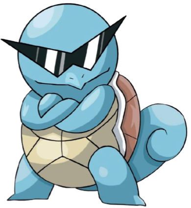
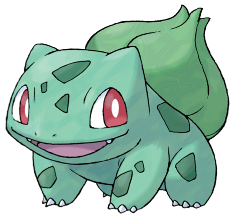

China Cook
Visits for convenience and proximity to home.
Would improve protection from heat, rain and other weather.
Research presentation
Yiran & Peter
What brings people to farmers markets?
Starting at Union Square, we explored why people visit, what affects their visit, and how they feel about the experience.
Understand what motivates customers to visit farmers markets so we can improve their shopping experience.
People who shop for food at farmers markets.

Visits for convenience and proximity to home.
Would improve protection from heat, rain and other weather.
Visits for the familiar feeling of markets back home.
Would improve the flow of foot traffic.

Visits for unusual ingredients unavailable in supermarkets.
Wants certainty about which vendors will be there and when.
“I don’t like to buy too much fresh food all at once so I don’t put it in the fridge too long. It helps keep the ingredients fresh.”
When preparing meals, shop frequently for meat and produce to make fresh-tasting food for busy parents.
“Farmers markets remind me of home. They feel very familiar.”
When preparing meals, browse vendors for unusual, exceptional ingredients and enjoy a nostalgic experience.
“As a vegetarian, farmers markets offer more variety than the grocery store. But finding ingredients or vendors can be unpredictable.”
When preparing meals, find unusual, high-quality vegetables to cook vegetarian food at home.
Why choose a farmers market over another option?
From the interviews, we assumed shoppers were buying food to cook at home.
We mapped the advantages and disadvantages of markets alongside the advantages of alternatives, such as supermarkets.
Motivations were both practical and experiential.
Supermarkets could compete on practical factors such as price and variety.
Interviewees often described experiences at farmers markets that supermarkets could not match.
Most people were looking for ingredients to cook at home.
Supermarkets offered packaged goods, consistency and shelter from the weather.
Variety, quality, price and convenience could favor either option.
Our interviews pointed to nostalgia, comfort, community and supporting local farmers as reasons to visit markets.
Supermarkets did not compete on these criteria.
Markets are sometimes outcompeted on practical needs. Addressing those issues could make visits more dependable and compelling.
Shopping at a market is not always the most practical choice. Its strength is an enriching experience that connects people to the market and each other.
Provide electrical access so vendors can serve ice cream on hot days.
Improve the flow of pedestrian traffic.
Show which vendors are present and what they have.
Offer ponchos or umbrellas when it rains.
Share information about vendors and their farms.
Help shoppers choose the best produce in person.
Provide public seating to create a third space.
Serve alcoholic drinks.
Run a second round of research focused on shared sentiments and experiences.
Conduct more intercept interviews before, during and after a market trip.
Ask customers to rate the proposed solutions.
| Research | A little |
|---|---|
| Analysis | 0% |
| Synthesis | 0% |
| Presentation | 0% |
Codex assisted with visual design, copyediting, and HTML, CSS and JavaScript implementation.
The figures at left record the original work’s disclosure.